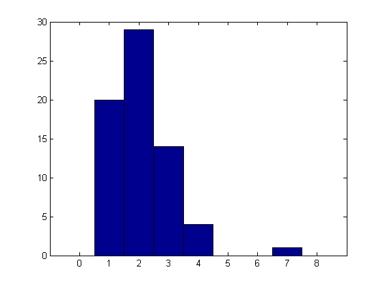
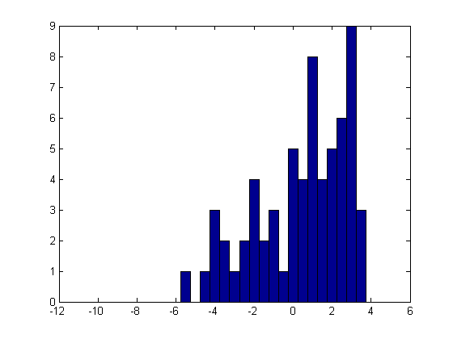
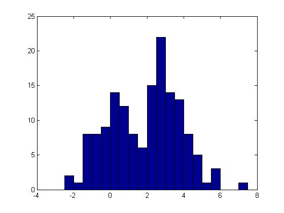
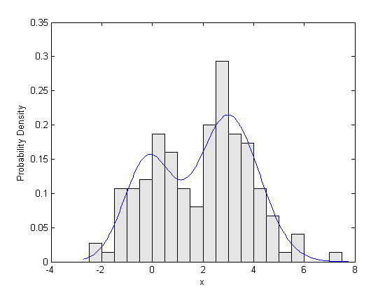

カスタム一変量分布の近似
このデモは、Statistics Toolbox™ 関数 mle を使用して一変量のデータにカスタム分布を近似させる例を示します。mleを使用すると、Toolbox が特定の近似関数を指定する分布以外のさまざまな分布に対し最尤パラメーター推定量を計算し、その精度を推定できます。
これを行うには、1 つまたは複数の M 関数を使用して分布を定義する必要があります。最も簡単なケースでは、コードを記述して近似させる分布の確率密度関数 (PDF) を計算し、それ以降の作業を mle で処理することができます。このデモではこのようなケースについて説明します。打ち切られたデータがある問題でも、コードを記述して累積分布関数 (CDF) または生存関数 (SF) を計算しなければなりません。また、問題によっては対数尤度関数 (LLF) 自体を定義すると有利である場合もあります。このデモの第 2 部、カスタム一変量分布の近似 (第 2 部) では、このような問題について説明します。
目次
カスタム分布の近似: 0 を打ち切ったポアソン分布の例
ほとんどの場合、カウント データはポワソン分布を使用してモデル化され、Statistics Toolbox 関数 poissfit を使用してポワソン モデルを近似させることができます。しかし、0 であるカウントがデータに記録されず、「0 の欠損」のためにポワソン分布を近似させるのが難しい場合があります。この例では、関数 mle を使用して、0 を打ち切ったデータにポワソン分布を近似させる方法を示します。
この例では、0 を打ち切ったポワソン分布のシミュレートされたデータを使用します。最初に、ランダムなポワソン データを生成します。
randn('state',0); rand('state',0); n = 75; lambda = 1.75; x = poissrnd(lambda,n,1);
次に、打ち切りをシミュレートするデータから 0 をすべて削除します。
x = x(x > 0); length(x)
ans =
68
シミュレートされたデータのヒストグラムを示します。データは、0 がないこと以外はポワソン分布のように見えます。これを、0 の確率のない正の整数のポワソン分布と同じ分布に近似させます。こうすると、「0 の欠損」を考慮しながら、ポワソン分布のパラメーター lambda を推定できます。
hist(x,[0:1:max(x)+1]);
最初のステップは、確率関数 (PF) を使用して 0 を打ち切ったポワソン分布を定義することです。ポワソン分布の平均のパラメーター lambda の値を指定して、x の各点の確率を計算する関数を作成します。0 を打ち切ったポワソン分布の PF は通常のポワソン分布の PF と同じですが、和が 1 になるように再正規化されています。0 を打ち切ると、再正規化は 1-Pr{0} です。PF の関数を作成する最も簡単な方法は、無名関数を使用することです。
pf_truncpoiss = @(x,lambda) poisspdf(x,lambda) ./ (1-poisscdf(0,lambda));
簡略化するために、この関数に与えられるすべての x 値は正の整数で、チェックを行わないとします。エラー チェックまたはさらに複雑な分布ではコードの行数が増えるため、その関数を別のファイルで定義することを推奨します。
次のステップは、パラメーター lambda に対し、ラフな初期推定値を適切に指定することです。ここでは、標本平均を使用します。
start = mean(x)
start =
2.1029
'pdf' パラメーターを使用して、mle にデータと無名関数を指定します。(ポワソン分布は離散的であるため、これは PDF ではなく確率関数です)。ポワソン分布の平均パラメーターは正でなければならないため、lambda の下限も指定します。mle は lambda の最尤推定量を返し、オプションでパラメーターの約 95% 信頼区間を返します。
[lambdaHat,lambdaCI] = mle(x, 'pdf',pf_truncpoiss, 'start',start, 'lower',0)
lambdaHat =
1.7302
lambdaCI =
1.3721
2.0883
パラメーターの推定値が標本平均よりも小さいことに注意してください。最尤推定ではデータに存在しない 0 の欠損を考慮しているため、そのようになります。
また、mlecov が返す大きい標本の分散の近似を使用して、lambda の標準誤差推定も計算できます。
avar = mlecov(lambdaHat, x, 'pdf',pf_truncpoiss);
stderr = sqrt(avar)
stderr =
0.1827
分布関数に他の値を与える: 打ち切りを行った正規分布の例
連続したデータが打ち切られることもあります。たとえば、データ収集方法の制限のため、一部の固定値より大きい観測値が記録されない場合があります。この例では、関数 mle を使用して、打ち切りを行ったデータに正規分布を近似させる方法を示します。
この例では、打ち切り処理を行った正規分布のデータのシミュレーションを行います。最初に、ランダムな正規データを生成します。
n = 75; mu = 1; sigma = 3; x = normrnd(mu,sigma,n,1);
次に、打ち切り点 xTrunc を超える観測値を削除します。この例では、xTrunc は既知であり、推定の必要がないとします。
xTrunc = 4; x = x(x < xTrunc); length(x)
ans =
64
シミュレートされたデータのヒストグラムを示します。これを、x < xTrunc の正規分布と同じであるが xTrunc を超えると 0 確率である分布に近似させます。こうすると、「裾の欠損」を考慮して、正規分布のパラメーター mu および sigma を推定できます。
hist(x,[-10:.5:4]);
前の例と同様に、打ち切りを行った正規分布を PDF によって定義し、パラメーター mu および sigma の値を指定して、x の各点における確率密度を計算する関数を作成します。打ち切り点は固定され既知であり、打ち切りを行う正規分布の PDF は通常の正規 PDF であり、打ち切りを行ってから再正規化を行って 1 に積分されます。再正規化は xTrunc で評価された CDF です。簡略化するために、すべての x 値は xTrunc より小さく、チェックを行わないとします。無名関数を使用して PDF を定義します。
pdf_truncnorm = @(x,mu,sigma) normpdf(x,mu,sigma) ./ normcdf(xTrunc,mu,sigma);
打ち切り点 xTrunc は推定されていないため、PDF 関数の入力引数リストの分布パラメーター内にありません。また、xTrunc はデータ ベクトル入力引数の一部ではありません。無名関数を使用するとワークスペースで既に定義されている変数 xTrunc を簡単に参照することができ、追加の引数として渡すことを考慮する必要はありません。
また、パラメーター推定のラフな初期推定値を指定する必要があります。この場合、打ち切りがそれほど極端でないため、標本平均と標準偏差は正しく機能します。
start = [mean(x),std(x)]
start =
0.4491 2.3565
'pdf' パラメーターを使用して、mle にデータと無名関数を指定します。sigma は正でなければならないため、パラメーターの下限も指定します。mle は単一ベクトルとして mu および sigma の最尤推定量、およびこの 2 つのパラメーターの約 95% 信頼区間の行列を返します。
[paramEsts,paramCIs] = mle(x, 'pdf',pdf_truncnorm, 'start',start, 'lower',[-Inf 0])
paramEsts =
1.7136 3.1553
paramCIs =
-0.0614 2.0716
3.4885 4.2390
mu および sigma の推定値が標本平均および標準偏差よりもかなり大きいことに注意してください。これは、モデルの近似が分布の「欠損」した上裾を考慮しているためです。
mlecov を使用して、パラメーター推定の近似共分散行列を計算できます。通常、近似は標本が大きい場合に妥当であり、推定の標準誤差は対角要素の平方根で概算できます。
acov = mlecov(paramEsts, x, 'pdf',pdf_truncnorm)
stderr = sqrt(diag(acov))
acov =
0.8201 0.4051
0.4051 0.3057
stderr =
0.9056
0.5529
複雑な分布の近似: 2 つの正規分布の混合
データセットには二峰性または多峰性を示すものがありますが、そのようなデータに標準分布を近似させるのは多くの場合不適切です。ただし、単純な単峰性分布を混合することで、このようなデータをモデル化できることがよくあります。実際には、アプリケーション特有の知識に基づいて、混合で各成分のソースに解釈を加えることができる場合もあります。
この例では、2 つの正規分布を混合したものをシミュレーションを行ったデータに近似させます。この混合を次の構造的定義を使用して記述し、ランダム値を生成します。
最初に、偏りのあるコインを投げます。表が出たら、正規分布の平均 mu_1 と標準偏差 sigma_1 からランダムに値を取ります。 裏が出たら、正規分布の平均 mu_2 と標準偏差 sigma_2 から ランダムに値を取ります。
この例では、近似させるものと同じモデルを使用するのではなく、スチューデントの t 分布の混合からデータを生成します。これは、近似させるモデルの仮定からのずれに対して近似法がどの程度ロバストかをテストするために、モンテカルロ シミュレーションで行うようなものです。ただし、ここでは 1 つのシミュレートされたデータ セットを近似させます。
x = [trnd(20,1,50) trnd(4,1,100)+3]; hist(x,-2.25:.5:7.25);
前の例と同様に、確率密度を計算する関数を作成することにより、近似させるモデルを定義します。2 つの正規分布を混合した PDF は 2 つの正規成分の PDF の重み付き和であり、混合の確率で重み付けられます。この PDF は単純であり、無名関数を使用して作成できます。この関数は、PDF を評価するデータのベクトル、および分布の 5 つのパラメーターの、6 つの入力を取ります。各成分にはその平均および標準偏差のパラメーターがあり、混合の確率は合計 5 つになります。
pdf_normmixture = @(x,p,mu1,mu2,sigma1,sigma2) ...
p*normpdf(x,mu1,sigma1) + (1-p)*normpdf(x,mu2,sigma2);
また、パラメーターの初期推定値も必要です。モデルにパラメーターが多いほど、開始点を適切に取ることが重要になります。この例では、データの 2 つの四分位点を中心とした、等しい標準偏差を持つ、正規分布の等量混合 (p = 0.5) から開始します。標準偏差の初期値は、各成分の平均および分散として、混合の分散式から生成されます。
pStart = .5; muStart = quantile(x,[.25 .75]) sigmaStart = sqrt(var(x) - .25*diff(muStart).^2) start = [pStart muStart sigmaStart sigmaStart];
muStart =
0.2776 3.3135
sigmaStart =
1.1368
最後に、0 の範囲と混合の確率の範囲、および標準偏差の 0 の下限を指定する必要があります。範囲のベクトルのその他の要素は +Inf または -Inf に設定され、制限がないことを示します。
lb = [0 -Inf -Inf 0 0]; ub = [1 Inf Inf Inf Inf]; paramEsts = mle(x, 'pdf',pdf_normmixture, 'start',start, 'lower',lb, 'upper',ub)
警告:Maximum likelihood estimation did not converge.反復制限
exceeded.
paramEsts =
0.3480 -0.1840 3.0076 0.9276 1.2146
5 つのパラメーターを最適化したため、最尤最適化はその既定の繰り返し制限を超えました。カスタム分布の既定は繰り返し 200 回です。
statset('mlecustom')
ans =
Display: 'off'
MaxFunEvals: 400
MaxIter: 200
TolBnd: 1.0000e-006
TolFun: 1.0000e-006
TolTypeFun: []
TolX: 1.0000e-006
TolTypeX: []
GradObj: 'off'
Jacobian: []
DerivStep: 6.0555e-006
FunValCheck: 'on'
Robust: []
WgtFun: []
Tune: []
UseParallel: []
UseSubstreams: []
Streams: []
OutputFcn: []
statset 関数により作成したオプション構造体を使用して、その既定値をオーバーライドする必要があります。また、(PDF) 関数の評価制限を増やします。
options = statset('MaxIter',300, 'MaxFunEvals',600); paramEsts = mle(x, 'pdf',pdf_normmixture, 'start',start, ... 'lower',lb, 'upper',ub, 'options',options)
paramEsts =
0.3480 -0.1840 3.0076 0.9276 1.2146
収束の最終的な繰り返しは、結果の最後の数桁にしか関係ないように見えます。それにもかかわらず、収束に達したことを確認することはどのような場合でも有効です。
最後に、生データの確率のヒストグラムに対して近似密度をプロットし、視覚的に近似をチェックできます。
bins = -2.5:.5:7.5; h = bar(bins,histc(x,bins)/(length(x)*.5),'histc'); set(h,'FaceColor',[.9 .9 .9]); xgrid = linspace(1.1*min(x),1.1*max(x),200); pdfgrid = pdf_normmixture(xgrid,paramEsts(1),paramEsts(2),paramEsts(3),paramEsts(4),paramEsts(5)); hold on; plot(xgrid,pdfgrid,'-'); hold off xlabel('x'); ylabel('Probability Density');
入れ子関数の使用: 精度が異なる正規分布の例
データを収集するときに、精度または信頼性が異なる観測が行われることがあります。たとえば、複数の実験者がそれぞれ同じ量の独立した観測を多数行ったが、それぞれが観測値の平均値のみを報告した場合、報告された各データ ポイントの信頼性は、使用した生の観測値の数によって決まります。オリジナルの生データを使用できない場合、その分布の推定では使用できるデータ、つまり平均値の分散がそれぞれ異なることを考慮しなければなりません。実際には、このモデルには最尤パラメーター推定量の陽解があります。しかし、説明のために、パラメーターの推定に mle を使用します。
10 のデータ ポイントがあり、それぞれが 1 ～ 8 の観測値のいずれかの平均であるとします。オリジナルの観測値は使用できませんが、データ ポイントのそれぞれにいくつの観測値があったかはわかっています。生データの平均値と標準偏差を推定する必要があります。
x = [0.25 -1.24 1.38 1.39 -1.43 2.79 3.52 0.92 1.44 1.26]; m = [ 8 2 1 3 8 4 2 5 2 4];
各データ ポイントの分散は使用された観測値の数に反比例するため、1/m を使用して最尤推定近似の各データ ポイントの分散を重み付けします。
w = 1 ./ m
w =
Columns 1 through 7
0.1250 0.5000 1.0000 0.3333 0.1250 0.2500 0.5000
Columns 8 through 10
0.2000 0.5000 0.2500
ここで近似を行うモデルでは、PDF を使用して分布を定義することもできますが、正規分布の PDF は次のような形になるため、対数 PDF を使用するほうが自然です。
c .* exp(-0.5 .* z.^2),
いずれにしても mle は PDF の対数を取り、対数尤度を計算する必要がありますが、対数 PDF を直接計算する関数を作成します。
対数 PDF 関数を使用して、mu および sigma の値を指定して、x の各点の確率密度の対数を計算する必要があります。また、別の分散の重みを考慮する必要もあります。これまでの例とは異なり、この分布関数は 1 行で済む関数よりもやや複雑であり、ファイルに別の関数として明確に記述されています。対数 PDF 関数には追加データとして観測値の数が必要であるため、この近似を行う最も簡単な方法は入れ子関数を使用することです。
wgtnormfit.m という関数の別のファイルを作成してあります。この関数には、データ初期化、重み付き正規モデルの対数 PDF の入れ子関数、およびモデルに実際に近似させるための関数 mle への呼び出しが含まれています。sigma は正でなければならないため、パラメーターの下限を指定する必要があります。mle への呼び出しは、単一のベクトルの mu および sigma の最尤推定量を返します。
type wgtnormfit.m
function paramEsts = wgtnormfit
%WGTNORMFIT Fitting demo for a weighted normal distribution.
% Copyright 1984-2004 The MathWorks, Inc.
% $Revision: 1.1.4.2.2.1 $ $Date: 2010/07/29 21:29:29 $
x = [0.25 -1.24 1.38 1.39 -1.43 2.79 3.52 0.92 1.44 1.26];
m = [ 8 2 1 3 8 4 2 5 2 4];
function logy = logpdf_wn(x,mu,sigma)
v = sigma.^2 ./ m;
logy = -(x-mu).^2 ./ (2.*v) - .5.*log(2.*pi.*v);
end
paramEsts = mle(x, 'logpdf',@logpdf_wn, 'start',[mean(x),std(x)], 'lower',[-Inf,0]);
end
wgtnormfit.m で、'logpdf' パラメーターを使用して、mle に入れ子関数 logpdf_wn へのハンドルを渡します。入れ子関数は、重み付け対数 PDF の計算で観測値の数 m を参照します。ベクトル m は親関数内で定義されるため、logpdf_wn がそれにアクセスします。明示的な入力引数として m を渡すことを考慮する必要はありません。
パラメーター推定のラフな初期推定値を指定する必要があります。この場合、重み付けされない標本平均と標準偏差に問題はなく、wgtnormfit.m がこれを使用します。
start = [mean(x),std(x)]
start =
1.0280 1.5490
モデルを近似させるには、近似関数を実行します。
paramEsts = wgtnormfit
paramEsts =
0.6244 2.8823
mu の推定値が標本平均の推定値の 3 分の 2 より小さいことに注意してください。つまり、推定値は、生の観測値が最も多い、最も信頼性の高いデータ ポイントの影響を最も大きく受けます。このデータセットでは、これらの点が重み付けされていない標本平均から推定値を引き下げる傾向にあります。
パラメーター変換の使用: 正規分布の例 (続き)
最尤推定では、通常、推定値の分布について、大きい標本の正規近似を使用してパラメーターの信頼区間を計算します。大部分の場合、これは適切な仮定ですが、標本サイズが小さい場合は、1 つまたは複数のパラメーターを変換することにより正規近似を改良することが有利になる場合があります。この例では、位置パラメーターとスケール パラメーターを使用します。多くの場合、スケール パラメーターは対数に変換されますが、ここでは sigma でこれを行います。まず、新しい対数 PDF 関数を作成し、次にそのパラメトリゼーションを使用して推定値を再計算します。
新しい対数 PDF 関数は、関数 wgtnormfit2.m 内の入れ子関数として作成されます。最初の近似と同様に、このファイルには、データ初期化、重み付き正規モデルの対数 PDF の入れ子関数、およびモデルに実際に近似させるための関数 mle への呼び出しが含まれています。sigma は任意の正の値であるため、対数 (sigma) は非有界であり、上限または下限を指定する必要はありません。また、この例での mle への呼び出しは、パラメーターの推定と信頼区間の両方を返します。
type wgtnormfit2.m
function [paramEsts,paramCIs] = wgtnormfit2
%WGTNORMFIT2 Fitting demo for a weighted normal distribution (log(sigma) parameterization).
% Copyright 1984-2004 The MathWorks, Inc.
% $Revision: 1.1.4.2.2.1 $ $Date: 2010/07/29 21:29:29 $
x = [0.25 -1.24 1.38 1.39 -1.43 2.79 3.52 0.92 1.44 1.26];
m = [ 8 2 1 3 8 4 2 5 2 4];
function logy = logpdf_wn2(x,mu,logsigma)
v = exp(logsigma).^2 ./ m;
logy = -(x-mu).^2 ./ (2.*v) - .5.*log(2.*pi.*v);
end
[paramEsts,paramCIs] = mle(x, 'logpdf',@logpdf_wn2, 'start',[mean(x),log(std(x))]);
end
wgtnormfit2.m は、新しいパラメトリゼーションに変換された同じ開始点、つまり、標本の標準偏差の対数を使用することに注意してください。
start = [mean(x),log(std(x))]
start =
1.0280 0.4376
[paramEsts,paramCIs] = wgtnormfit2
paramEsts =
0.6244 1.0586
paramCIs =
-0.2802 0.6203
1.5290 1.4969
パラメトリゼーションは対数 (sigma) を使用するため、変換してオリジナルのスケールに戻し、sigma の推定値と信頼区間を取得する必要があります。最尤推定がパラメトリゼーションに対し不変であるため、mu および sigma 両方の推定値は最初の近似と同じであることに注意してください。
muHat = paramEsts(1) sigmaHat = exp(paramEsts(2))
muHat =
0.6244
sigmaHat =
2.8823
muCI = paramCIs(:,1) sigmaCI = exp(paramCIs(:,2))
muCI =
-0.2802
1.5290
sigmaCI =
1.8596
4.4677